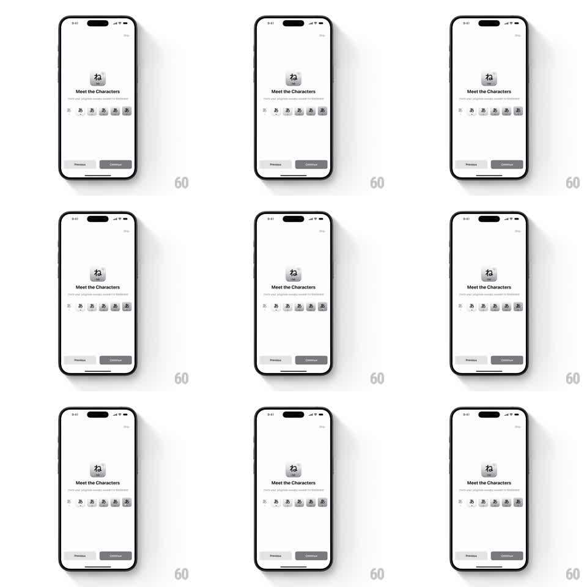

Media
Frame-by-frame

Rebuild this animation 1:1: Kann's mastered character card - a subtle sparkle loops over the Mastered badge on the featured kana tile.

Rebuild this animation 1:1: Kann's mastered character card - a subtle sparkle loops over the Mastered badge on the featured kana tile. ## Integration Integration: stack-agnostic spec - springs given as stiffness/damping, timed motions as duration + curve; map every value to your framework and animation library of choice. ## Scene "Meet the Characters" screen: a large rounded tile with the kana character and a small "Mastered" badge at its corner, the heading and a row of smaller character chips below, and Previous / Continue buttons at the bottom. ## Motion spec Pattern: looping badge sparkle, ~2.4s cycle. - A small four-point sparkle fades in at the badge's edge (scale 0 to 1, 300ms), holds briefly, twinkles (scale 1 to 0.7 to 1, 200ms), then fades out (300ms). - A second, smaller sparkle follows at the opposite edge 400ms later on the same cycle. - The badge itself has a faint simultaneous sheen: a light sweep crosses it once per cycle (600ms, ease-in-out). - The cycle repeats every 2.4s. Everything else on screen is static. ## Calibration - The sparkle is small and slow - it rewards attention, it never demands it. - Two sparkles maximum per cycle; more reads as glitter noise. ## Reduced motion Static badge, no sparkle. ## Don't miss - Sparkles anchor to the badge, not the kana character. - The sheen sweep is clipped to the badge shape.